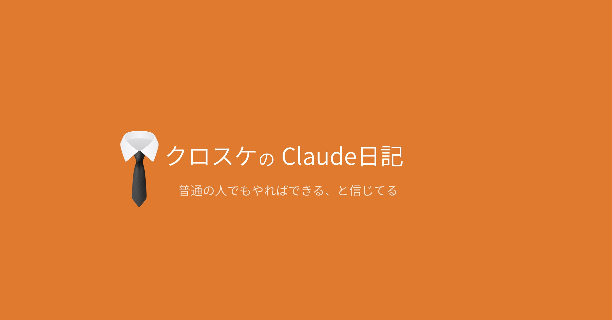

生成AIのClaudeを触ってたら夢中になった。1週間でWebアプリリリース、次の1週間でnoteで初売上。全部初めての体験だった。でも実は失敗の連続。その過程、全部書きました。
Episodes
URLを渡しただけで、1分で答えが出た
ジェームズボンドに体重管理をさせた
美女のはずが仙人になって、気づいたら月15,000円だった
先に言えよ——Claude Codeを知るまで
黒い画面と呪文
AIに「遠慮するな」と命令した
正直に言います。今の作業方法は最悪です。
なぞかけの謎をとく
現在進行形で更新中。noteで続きを読めます。
Magazine
第5回以降の有料記事をまとめて読むなら、マガジンがお得です。単品より200円安く、追加分もそのまま読めます。
クロスケ
40代。サウナ・バー・靴磨きが好き。普通の会社員でもちろんエンジニア経験ゼロ。Claudeを知って1週間でWebアプリをリリースしたら友人の評価は散々、次の1週間でnoteを出したら売上わずか4千円。それでも止まれない。続きは、これから。
第1回から、無料で読めます。
第1〜4回 無料 / 第5回以降 有料